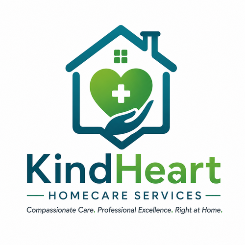
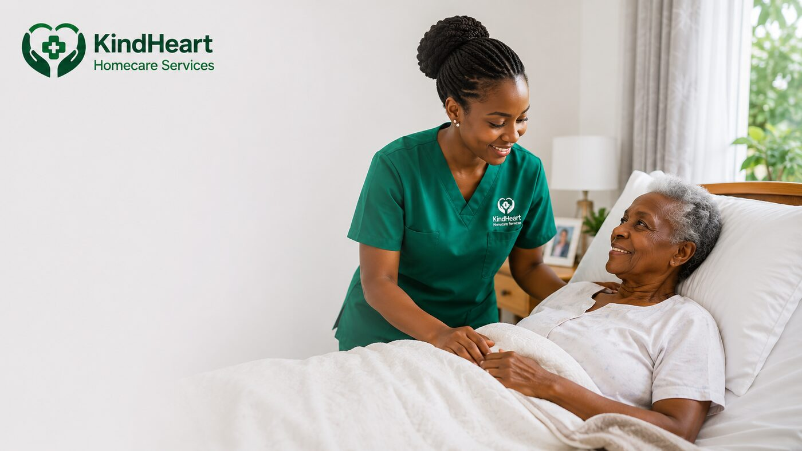
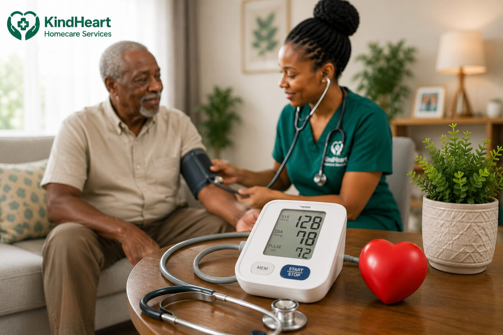
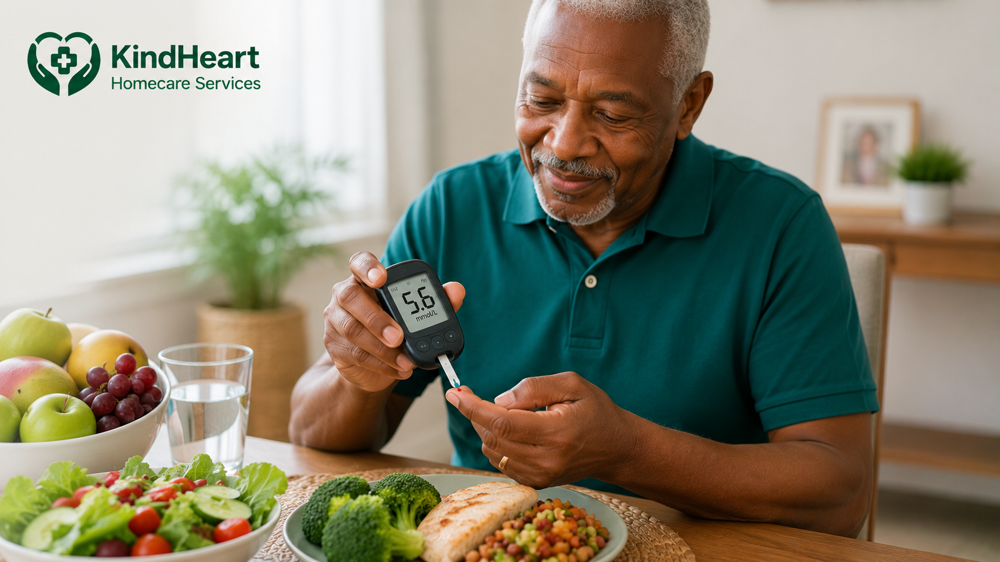

KINDHEART HOMECARE SERVICES • RIGHT CARE AT HOME.
KindHeart Homecare Services provides professional home nursing, elderly care, hospital companionship, post-operative care, palliative support and other homecare services for individuals and families across Kenya.
We come to you — at home, in hospital, or wherever care is needed.
✓ Flexible Payments• ✓ Trained Professionals • ✓ 24/7 consultation• ✓ We Come To You

Whether your loved one is recovering from surgery, living with a chronic condition, needs assistance with daily activities, or requires ongoing nursing care, KindHeart helps families access reliable professional care without unnecessary disruption.
Home • Hospital • Wherever Care Is Needed
Quality care delivered in the comfort and safety of your home.
Professional nursing for wound care, injections, monitoring & more.
Day, night, or 24-hour care — we work around your schedule.
Comprehensive home care tailored to your needs

Home NursingRoutine monitoring, medication support, wound care and other nursing needs.
Assistance with personal care, daily activities, mobility, companionship.
We stay with your loved one when admitted, providing support.

Post-Operative CareSupport during recovery after surgery, safe transition home.
Comfort-focused support for serious or life-limiting conditions.
Rehabilitation and mobility support delivered at home.
Personalized assistance for children and adults with disabilities.
Medical pickups, appointments, wellness checks and monitoring.
The equipment you need for safer, more comfortable care at home.
Available equipment may include: Hospital beds • Wheelchairs • Mobility equipment • Patient care equipment • Monitoring equipment
Right Care. Right Support. Right Where You Need It.
Trained healthcare professionals and caregivers based on needs.
Care at home, in hospital, or wherever support is required.
Every client with dignity, respect and understanding.
Short visits to ongoing homecare support, around family needs.
Homecare services where your family needs them.
We Come To You — Finding dependable home nursing should not mean travelling long distances.
Call or WhatsApp and tell us about care needs.
We learn about condition, location and support required.
We arrange appropriate homecare or hospital support.
Care delivered at home, hospital or wherever needed.
Let's talk about the right care for your situation.
Right Care at Home.
Virtual HQ: Eldoret, Uasin Gishu County, Kenya
Phone: 0707 546 365
Email: info@kindhearthomecareservices.co.ke
Service Areas: Eldoret • Kapsabet • Nakuru • Kakamega • Vihiga • Busia • Bungoma • Kisumu • Kitale • Nairobi • West Pokot